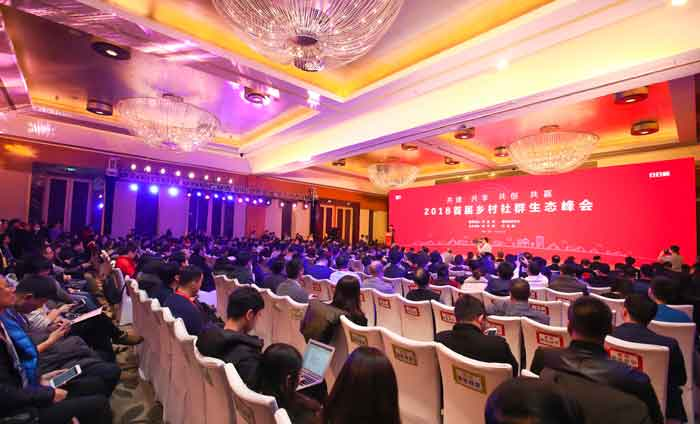

探索农村社群生态圈新模式 助力乡村振兴战略实施

新华网北京2月4日电（凌纪伟）党的十九大报告提出实施乡村振兴战略，并提出“产业兴旺、生态宜居、乡风文明、治理有效、生活富裕”的总要求。当前，中国农村贫困状况依然严峻，作为乡村振兴的主要抓手，必须坚持农业农村优先发展。
实现乡村振兴，需要思考如何让乡村生活变得更加智慧化、现代化、生态化，还要思考如何创新模式，推动更多人才、技术、资本等资源要素向农村汇聚，特别是如何把物流、金融、大数据等先进科技融入乡村振兴。2月4日，由新华网和日日顺共同主办的“2018首届乡村社群生态峰会”通过探索乡村振兴和精准扶贫新模式，搭建农民美好生活解决方案平台，为新时代建设美好乡村社群生态注入全新力量。
乡村振兴 需要培育新产业新业态新模式
实现乡村振兴，主体是广大农民，最根本的是让农民的钱袋子鼓起来、生活富起来。
如何激发农村地区的经济活力？关键还得靠市场、靠创新。“下一步要注重发挥市场需求导向作用，更加注重发挥新兴主体的引领作用。”农业部农产品质量安全中心副主任寇建平说，要按照十九大报告的部署，积极培育农村新产业新业态新模式，不断增加农民的财产收入。
海尔是伴随改革开放成长起来的企业，是改革开放伟大进程的参与者和受益者。旗下日日顺通过搭建农村社群生态圈，打造服务农民美好生活的场景平台，为助力乡村精准扶贫及国家乡村振兴战略的实施探索出一条新路子、新模式。
怎样帮农民找到一条创业成功之路，海尔一直站在农民的角度思考这个问题。海尔集团总裁周云杰说，通过搭建乡村创业平台，农民实现了向创业者的转变，在经济收入增加的同时实现个人价值的认同，而且形成了一人创业带动一片人致富的可喜局面。
日日顺的平台构想已在实践中得到验证。进驻全国15000多个村子的日日顺健康水站，在解决农民健康饮水问题的同时，让农民成为平台上的创业者——小顺管家，这批人为村民提供健康饮水和分布式光伏方案，同时把村里的土特产通过平台带到城里，小触点大平台，带动周围一群人共同致富。
一些农村地区之所以落后，在中国质量万里行促进会会长刘兆彬看来，缺少社群生态是其中一个原因。他认为，“2018首届乡村社群生态峰会”把社群生态作为主题，超越了单纯卖产品，这是有高度的、办得好。他呼吁，要发挥社群生态的力量，构建一个优良的社会生态和绿色产业链。
新华社总经理室总经理张永平积极评价日日顺响应国家精准扶贫战略，搭建开放的农村社群生态圈，帮助农民创业脱贫的做法，认为这是一种乡村振兴的新模式。“正是基于精准扶贫、乡村振兴的共同责任，新华网和日日顺联合主办了本届峰会。”他说。
乡村社群新模式 打造多方共赢生态圈
一枚枚小小的脐橙，让赣南当地的农民不但找到了致富的“黄金果”、还找到了创业机会。
农业科学家、被誉为赣南脐橙第一人的袁守根说，日日顺为他们提供健康方案的同时还搭建了创业平台，为农民提供线上线下培训，打通了农产品的上行渠道。他相信，赣南人构建起生态圈，使乡村居民广泛参与，借助平台积极创业，就能实现美丽乡村梦、奔上小康路。
乡村社群生态是因，帮助农民脱贫致富、过上美好生活是果。来自烟台的小顺管家孙吉信在加入日日顺健康平台短短半年内，除了获得水站充值收入外，他还为亲朋好友提供了家电、光伏安装等服务，既实现了自己的创业梦，同时也带动周围邻居朋友生活质量的提升和收入的增加。
孙吉信不是个例。海尔集团副总裁解居志在发布乡村社群生态战略时说，全国已涌现出2万多个像孙吉信这样的小顺管家创业者。“我们建立开放的生态圈，要为农民定制美好生活方案。”他说，日日顺以小管家为触点，借助以村为单位的亲情社群交互村民需求，为农民提供定制化的农业高产的农资方案、农特产品进城的变现方案，以及分布式光伏清洁能源方案等。
乡村社群生态模式基于农村小顺管家作为基础网络建立起共创共赢生态圈，目的就是帮助农民快速脱贫致富，帮助农民过上美好生活。
在共创美好生活的道路上，全国各地涌现出许多优秀案例。获得首届金农奖-首批10大乡村社群生态示范县的河北省邯郸市复兴区代表说，每个村的小顺管家成为乡村致富的带头人，为农民搭建了一个创业平台，为农村广大贫困家庭开创了脱贫致富新道路。
日日顺乡村社群生态圈的成功构建，让长期从事金融研究的中国社科院金融所副所长胡滨增强了信心，他坚信，可以把普惠金融做实，提高农村农民的金融服务覆盖面，通过普惠金融破解整个乡村振兴中所遇到的金融短板问题。
探索贯彻落实乡村振兴战略的新模式，是一项长期而又意义非凡的伟大事业。周云杰明确表示，海尔将继续携手政府、各资源生态方、社会等多方力量，搭建开放的乡村创业平台，加快探索精准扶贫新模式，为国家精准扶贫政策落地及乡村振兴作出应有的贡献。


 意见反馈
意见反馈